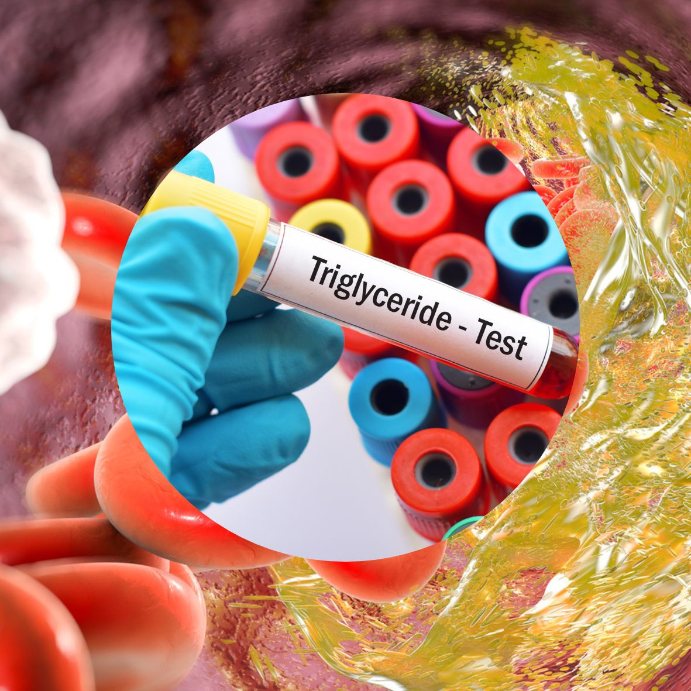

How to Lower Your Triglycerides
Triglycerides are the most common type of fat in your blood. Your body makes them from the extra calories you eat, especially from sugar, refined starches and alcohol, and stores them as an energy reserve. When the level stays high, it adds to your risk of heart disease and fatty liver, and a very high level can cause a painful inflammation of the pancreas.
The encouraging part is that triglycerides respond to lifestyle changes faster and more strongly than almost any other blood fat. Like high LDL cholesterol, high triglycerides cause no symptoms, so a blood test is the only way to know.
Know your numbers
Triglycerides are measured on the same blood test as your cholesterol, called a lipid profile. Most people do not need to fast, but follow your doctor's instructions. If a non-fasting result is high, your doctor may repeat it after an overnight fast, because a recent meal can raise the number.
As a rough guide for adults:
- Normal: below 1.7 mmol/L (150 mg/dL)
- Mildly raised: 1.7 to 2.2 mmol/L (150 to 199 mg/dL)
- High: 2.3 to 5.6 mmol/L (200 to 499 mg/dL)
- Very high: above about 5.6 mmol/L (500 mg/dL). Above about 10 mmol/L (880 mg/dL), the risk of acute pancreatitis rises sharply and this needs prompt medical care.
What matters most is the whole picture. Your doctor will read your triglycerides together with your LDL, HDL, blood sugar, blood pressure, waist size and family history.
What pushes triglycerides up
Before changing your diet, it helps to know whether something else is driving the number. Common causes include:
- Excess calories, sugary drinks, sweets and refined carbohydrates
- Regular alcohol, even in modest amounts for some people
- Excess weight, especially around the waist
- Poorly controlled diabetes or prediabetes
- An underactive thyroid, kidney disease or fatty liver
- Certain medicines, including some steroids, diuretics, beta-blockers, oral oestrogen and retinoids. Never stop a prescribed medicine on your own; ask your doctor.
- Family tendency. Very high levels, especially in a young person, can be inherited and need specialist attention.
Eat to lower triglycerides
For triglycerides, the type of carbohydrate and the amount of sugar and alcohol matter more than fat itself. In Mauritius, much of the extra sugar comes from drinks and sweets that are easy to overlook, and much of the refined starch from white bread, white rice and fried dough.
Eat less of:
- Sugary drinks: soft drinks, sirop, packaged juices, sweetened tea and coffee, alouda, faluda and sugarcane juice. Sweetened drinks are often the single biggest change you can make.
- Sweets and desserts: gato patate, gato coco, gajak, laddoo, jalebi, halwa, napolitaine, cakes, pastries and ice cream
- White bread, large portions of white rice, farata, and roti or dholl puri made with white flour
- Deep-fried snacks such as gato piment, bajia, samoussa, boulette and fried chicken, especially when the oil has been reused
- Alcohol, including beer, rum and wine. If your triglycerides are high, cutting down or stopping can lower them substantially.
- Ghee, butter, margarine, palm oil and coconut oil, and fatty or processed meats such as sausages, salami and corned beef
Eat more of:
- Dholl, gram (pois chiche), haricot rouge, pois du cap and other pulses, which release sugar slowly and keep you full. Eat them most days.
- Brèdes, chouchou, bringelle, lalo (okra), tomatoes, cabbage and other vegetables, cooked with little oil
- Whole fruit such as guava, papaya, orange and apple, in place of fruit juice, and in sensible portions
- Oats, brown rice, barley and whole-wheat bread or roti, in smaller portions than you would eat of white rice or bread
- Oily fish such as sardines, maquereau (mackerel) and tuna, grilled, steamed or cooked in a light rougaille, at least twice a week. Their omega-3 fats lower triglycerides.
- A small handful of unsalted peanuts, almonds or walnuts a day
- Water, unsweetened tea or plain water with lemon in place of sweetened drinks
- Soya, sunflower, canola or olive oil, measured with a spoon rather than poured
Simple rules for the kitchen: fill half your plate with vegetables, keep rice and bread to about a quarter of the plate, grill, steam, bake or simmer instead of deep-frying, and keep sweets for occasions rather than every day. With these changes, triglycerides often fall by 20% or more, and sometimes by half or more when sugar, alcohol and weight are the main causes (approximate).
Lifestyle habits that help
Unlike LDL, triglycerides respond strongly to weight loss, exercise and alcohol reduction, so these habits matter.
- Lose excess weight. Even a 5 to 10% loss can lower triglycerides noticeably and improve blood sugar and blood pressure.
- Move more. Aim for at least 150 minutes a week of moderate activity, such as a brisk walk in the cooler hours of the morning or evening, cycling, swimming or dancing. Exercise lowers triglycerides and raises HDL (“good”) cholesterol.
- Cut back on alcohol. Alcohol is one of the quickest ways to raise triglycerides. If your level is high, avoiding it completely is often the best advice.
- Control your blood sugar. If you have diabetes, good control often brings triglycerides down by itself.
- Stop smoking. Smoking does not raise triglycerides much, but it damages your arteries and multiplies the harm of any raised blood fat.
- Sleep well. Poor sleep, and untreated sleep apnoea, are linked to weight gain and raised blood fats.
Do I need medicine?
Most people with mildly or moderately raised triglycerides do well on lifestyle changes alone. Medicine may be considered if your triglycerides are very high, if they stay high despite your efforts, or if you also have heart disease, diabetes or high LDL. Your doctor may prescribe a fibrate, a statin (which is mainly used to lower LDL and heart risk, with a smaller effect on triglycerides) or a prescription form of omega-3. Over-the-counter fish oil capsules are not a substitute for diet and have not been shown to protect the heart reliably, so ask your doctor before relying on them.
When to see a doctor
Book a check-up and a lipid test if you have not had one, or if any of these apply:
- Your triglycerides were high on a previous test, or remain above 2.3 mmol/L (200 mg/dL)
- You have diabetes, prediabetes, high blood pressure, kidney disease, an underactive thyroid or a fatty liver
- You drink alcohol regularly, or have a large waist
- A close relative had very high blood fats, pancreatitis, or a heart attack or stroke at a young age
- You have had a heart attack, stroke, stent or bypass
Seek emergency care immediately for severe, persistent pain in the upper abdomen that may spread to the back, especially with nausea or vomiting. This can be a sign of pancreatitis, and the risk is highest when triglycerides are very high. Also get urgent help for chest pain, sudden breathlessness, or sudden weakness, facial droop or difficulty speaking.
In short
- Get your triglycerides measured and ask your doctor if diabetes, thyroid, alcohol or medicines could be adding to them.
- Cut sugary drinks, sweets, refined starches and alcohol first.
- Eat more pulses, vegetables, whole grains and oily fish, and lose excess weight.
- Stay active, then have your level rechecked in a few months and review it with your doctor.
At a glance: foods to eat more and less
| Food group | Eat more | Eat less |
|---|---|---|
| Drinks | Water, unsweetened tea, plain water with lemon | Soft drinks, sirop, packaged juices, sweetened tea and coffee, alouda, faluda, sugarcane juice, alcohol |
| Sweets and desserts | Fresh whole fruit such as guava, papaya, orange, apple | Gato patate, gato coco, gajak, laddoo, jalebi, halwa, napolitaine, cakes, pastries, ice cream |
| Rice, bread and grains | Oats, brown rice, barley, whole-wheat bread or roti, in modest portions | Large portions of white rice, white bread, farata, roti or dholl puri made with white flour |
| Pulses, vegetables and fruit | Dholl, gram, haricot rouge, pois du cap; brèdes, chouchou, bringelle, lalo, tomatoes, cabbage | Vegetables cooked in a lot of oil; fruit juice in place of whole fruit |
| Meat, fish and eggs | Sardines, maquereau and tuna at least twice a week; skinless chicken; eggs in moderation | Sausages, salami, chorizo, corned beef, fatty mutton and beef, chicken skin, fried chicken |
| Oils and fats | Soya, sunflower, canola or olive oil in small, measured amounts | Ghee, butter, margarine, palm oil, coconut oil; oil reused for frying |
| Snacks | Unsalted peanuts, almonds or walnuts (a small handful); fresh fruit | Gato piment, bajia, samoussa, boulette, chips, packaged biscuits |
Have a question about your own blood fats or heart risk? Message directly and ask.
Message on WhatsAppThis article is general health information and does not replace a medical consultation. Targets and treatment depend on your individual risk, so discuss them with your doctor. In a medical emergency, call SAMU (114) or go to your nearest hospital.